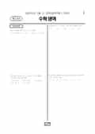

문제지

전국연합학력평가 · 시·도교육청 주관
2024년 6월 고1 학력평가 수학 1등급컷은 원점수 88점(추정), 표준점수 최고점은 143점입니다.
원점수 1등급컷은 공식 발표값이 아니라 EBSi·입시기관 값입니다. 등급별 값은 등급컷 표, 출처 구분은 데이터 원칙에 있습니다.

시험지를 먼저 풀어 보세요. 등급컷·표준점수·난이도는 흐리게 가려 뒀어요.
| 등급 | 원점수 | 표준점수 | 백분위 | 누적 |
|---|---|---|---|---|
| 1 | 88 | 134 | 95 | 5.71% |
| 2 | 80 | 127 | 88 | 12.44% |
| 3 | 69 | 118 | 77 | 23.29% |
| 4 | 54 | 106 | 59 | 40.86% |
| 5 | 38 | 93 | 40 | 60.17% |
| 6 | 23 | 81 | 22 | 78.62% |
| 7 | 15 | 74 | 10 | 90.37% |
| 8 | 11 | 71 | 3 | 96.87% |
등급별 컷 · 입시기관 4곳 원점수 추정 종합(EBSi·메가스터디·종로학원·대성마이맥) · 만점 100점
| 등급 | 표준점수 이상 | 인원(명) | 비율 |
|---|---|---|---|
| 1 | 134 | 17,564 | 5.71% |
| 2 | 127 | 20,723 | 6.73% |
| 3 | 118 | 33,407 | 10.85% |
| 4 | 106 | 54,058 | 17.57% |
| 5 | 93 | 59,423 | 19.31% |
| 6 | 81 | 56,787 | 18.45% |
| 7 | 74 | 36,170 | 11.75% |
| 8 | 71 | 19,989 | 6.5% |
| 9 | 62 | 9,636 | 3.13% |
시·도교육청 공개 자료
출처: 시·도교육청이 공개한 전국연합학력평가 성적 분석·통계자료(공개 자료 보기).
EBSi 응답자 기준으로 가장 많이 틀린 문항은 30번(4점, 주관식)이고, 오답률은 93.5%입니다. 오답률 50%를 넘은 문항은 9개입니다.
| 순위 | 문항 | 배점 | 오답률 | 정답 | 많이 고른 오답 |
|---|---|---|---|---|---|
| 1 | 30번 | 4점 | 93.5% | 154 | 주관식 |
| 2 | 29번 | 4점 | 90.2% | 13 | 주관식 |
| 3 | 28번 | 4점 | 82.1% | 20 | 주관식 |
| 4 | 21번 | 4점 | 64.7% | ② | ③ 20.3% |
| 5 | 20번 | 4점 | 63.7% | ① | ③ 20.6% |
| 6 | 19번 | 4점 | 61.1% | ④ | ② 22.5% |
| 7 | 27번 | 4점 | 58.3% | 11 | 주관식 |
| 8 | 26번 | 4점 | 57.7% | 8 | 주관식 |
| 9 | 17번 | 4점 | 52.2% | ⑤ | ③ 14.9% |
| 10 | 18번 | 4점 | 47.4% | ① | ③ 15.9% |
| 11 | 16번 | 4점 | 43.3% | ③ | ② 13.1% |
| 12 | 13번 | 3점 | 40.6% | ② | ③ 13.8% |
| 13 | 10번 | 3점 | 40.5% | ① | ⑤ 20.6% |
| 14 | 12번 | 3점 | 32.7% | ⑤ | ④ 11.1% |
| 15 | 25번 | 3점 | 29.3% | 23 | 주관식 |
EBSi 가채점 응답자 기준 · 전 문항 중 오답률 상위 15문항
출처: EBSi 역대 등급컷·오답률 공개 화면. 가채점에 참여한 EBSi 이용자 응답이라 전체 응시자 정답률과는 다를 수 있습니다.
발행 기관: 시·도교육청(전국연합학력평가). 파일 위치: 이 사이트가 보관한 사본. 저작권은 발행 기관에 있습니다. 원본과 다르거나 게시 중단이 필요하면 연락처로 알려 주세요. 등급컷 출처 구분은 데이터 원칙에서 설명합니다.
막대 색은 역대 대비 난이도 · 진한 막대가 이 시험 · 막대를 누르면 그 회차로 이동
| 회차 | 1등급컷 | 표점 최고 | 1등급 표점 | 난이도 |
|---|---|---|---|---|
| 6월 학평2024년 고1이 시험 | 88 | 143 | 134 | 매우 쉬움 |
| 3월 학평2024년 고1 | 88 | 148 | 138 | 쉬움 |
| 9월 학평2023년 고1 | 80 | 154 | 135 | 어려움 |
| 6월 학평2023년 고1 | 88 | 146 | 136 | 매우 쉬움 |
| 3월 학평2023년 고1 | 88 | 145 | 134 | 매우 쉬움 |
| 11월 학평2022년 고1 | 88 | 147 | 137 | 어려움 |
| 9월 학평2022년 고1 | 84 | 150 | 136 | 보통 |
| 6월 학평2022년 고1 | 85 | 147 | 134 | 보통 |
| 3월 학평2022년 고1 | 88 | 147 | 136 | 매우 쉬움 |
| 11월 학평2021년 고1 | 85 | 147 | 134 | 보통 |